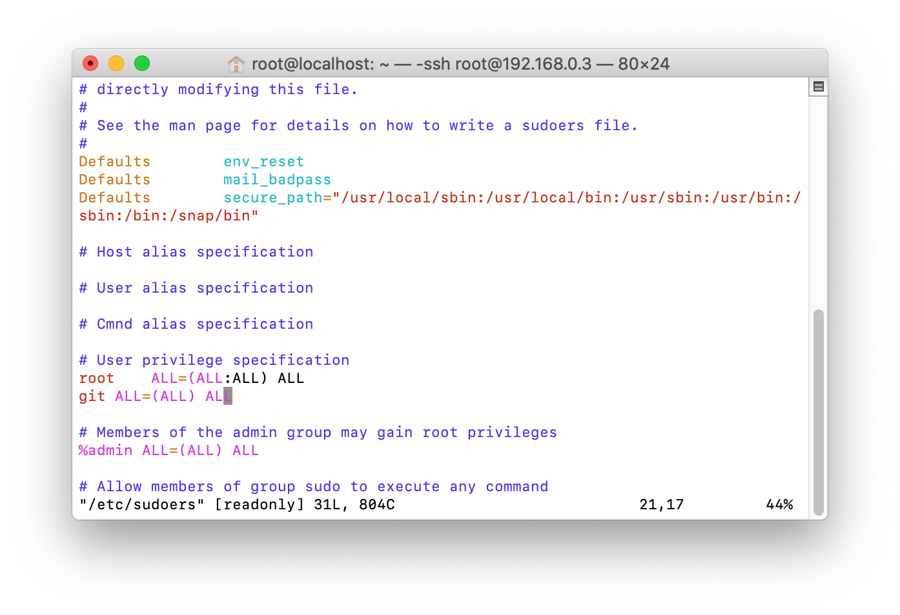
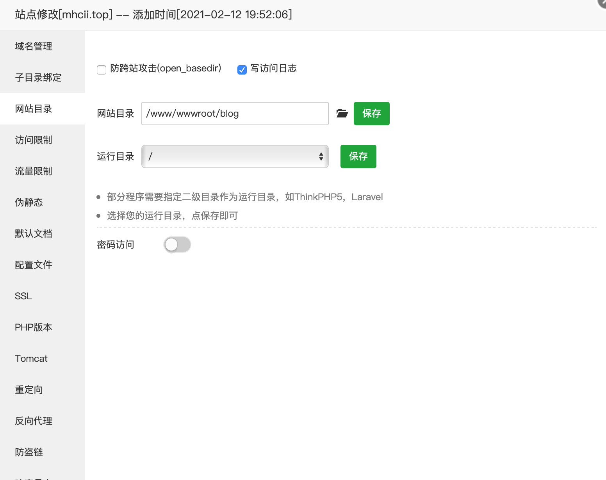

hexo通过git部署到服务器
title: Hexo通过Git部署到服务器
date: 2021-02-19 16:58:52
categories: 计算机
tags:
-
Hexo
-
Linux
目的：
-
通过hexo生成网页
-
在服务器上搭建git仓库，并将静态文件通过git上传到云主机
-
使用git-hooks实现自动部署
创建git仓库
1.安装git
yum install git #centos
apt install git #ubuntu
2.添加一个git用户
adduser git #添加git用户
$ chmod 740 /etc/sudoers #改变sudoers文件的权限为文件所有者可写
$ vim /etc/sudoers #vim编辑sudoers
找到root ALL=(ALL) ALL，在它下方加入一行
git ALL=(ALL) ALL

chmod 400 /etc/sudoers #将其权限修改为文件所有者可读
$ sudo passwd git #设置git用户的密码
3.创建git仓库并使用git-hooks实现自动部署
$ sudo mkdir /var/repo #新建目录，这是git仓库的位置
$ sudo mkdir /www/wwwroot/blog #这是博客源文件的目录
$ cd /var/repo #转到git仓库的文件夹
$ sudo git init --bare blog.git #创建一个名叫blog的仓库
$ sudo vim /var/repo/blog.git/hooks/post-update
增加下面两行，当我们从本地push上去时，git-hooks会自动执行下列命令，这是git自带的的方法，表示在/var/repo/blog.git中对/www/wwwroot/blog执行checkout -f命令，可以在我们每次 push 完之后，把部署目录更新到博客的最新状态
#!/bin/bash
git --work-tree=/www/wwwroot/blog --git-dir=/var/repo/blog.git checkout -f
4.修改权限
$ cd blog.git/hooks/
$ sudo chown -R git:git /var/repo/ #进行文件夹及其子文件所有者变更为git
$ sudo chown -R git:git /www/wwwroot/blog #进行文件夹及其子文件所有者变更为git
$ sudo chmod +x post-update #赋予post-update可执行权限
创建静态页面
两种方法可选
1.使用宝塔面板创建一个静态站点，将网站根目录修改为/www/wwwroot/blog即可

2.直接修改nginx配置文件，参考原文章(未进行测试)
修改hexo配置文件
找到文件/hexo/_config.yml
在最后面找到deploy:修改为
deploy:
type: git
repo: git@192.168.0.3:/var/repo/blog.git
branch: master
将192.168.0.3修改为你的服务器地址
注意：需要打开ssh端口，即22端口
🔗参考：